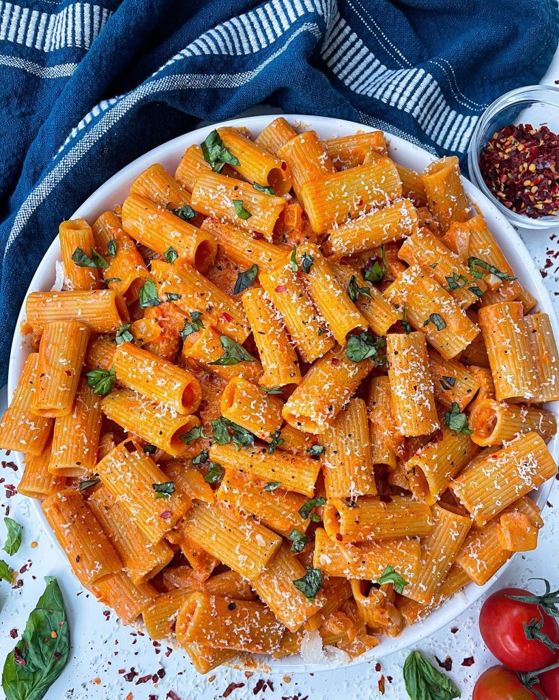

Gigi Hadid's Spicy Pasta
Ingredients
- olive oil
- 1 small clove of garlic, diced
- ¼ green onion
- ¼ cup tomato paste
- ½ cup heavy cream
- tablespoon vodka
- 1 teaspoon red pepper flakes
- 225 grams of shells pasta
- 1 tablespoon butter
- ¼ cup parmesan cheese
- Basil, chopped, to serve
- Salt and pepper to taste
Directions
- In a large saucepan, heat the olive oil, garlic and onion. Cook until soft. Add tomato paste and cook until it appears “darker in colour and a bit caramelised
- Add in the heavy cream. Add in the vodka and cook through until evaporated
- Add in the red pepper flakes
- Keep stirring until combined. Season with salt and pepper. Remove sauce from the heat.
- Cook pasta separately.When the pasta is done, save ¼ of the pasta water before draining.
- Add in the butter. Stir over a medium heat til the butter has melted and the sauce is sauccyyyy
- Add pasta and the pasta water to the sauce. Add parmesan cheese and stir. Add more salt and pepper to taste.
- Top with a sprinkling of parmesan cheese and basil to serve.